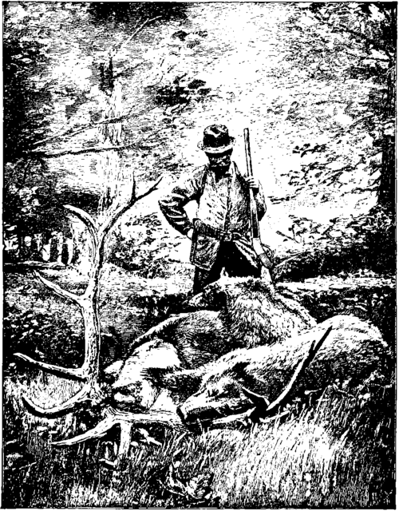

Camping And Hunting In The Shoshone. Part 6
Description
This section is from the book "Hunting", by Archibald Rogers. Also available from Amazon: Hunting.
Camping And Hunting In The Shoshone. Part 6
My first ambition was naturally, as I have said, to kill a buffalo; that task once accomplished, and repeated to the point of satiety, the aim and object of my life, during my two months' summer rest, was to slay a grizzly. My first hunting expedition included a trip from Saint Paul (then almost the eastern terminus of the railroad) to Vancouver Island, and during that long journey I never saw a grizzly. One day, coming on the very fresh trail of an immense fellow, the Indians promptly refused to take any part whatever in investigating the neighborhood; and as I was a most untrustworthy shot, and had only a double-barrelled muzzle-loading rifle, all things considered, perhaps this action of theirs was an evidence of their proverbial sagacity.
Caught in the Act.
My next essay was undertaken thirteen years after, in 1881. We had, my friend and I, a magnificent trip; rode all over the Big Horn Mountains, and killed plenty of game — indeed, we could not help it. In those days the mountains were full of deer, elk, and bear too; but somehow none of us ever saw a grizzly. I cannot to this day understand our want of success. Four trips I have made since then; but I never saw half the amount of fresh signs which we saw on the western slope of those mountains, on a stream named, in the maps, Shell Creek. Had I known as much as I know now, I could have made a much larger bag than the one I made on my last trip, when I had extraordinary luck, and killed eight grizzlies in three weeks, our party accounting altogether for twelve bears, two only of the twelve being trapped. I think this is the largest authentic score I have heard of, as made in late years, in so short a time.
I understand that the Big Horn region is still a black-tail country; but elk are rare, buffalo extinct, and cattle have driven out bear. As a rule, you will only find grizzlies where elk are. or have recently been. The truth must be told: The first real grizzly we did see (we once shot a mule in mistake for one) was in a trap. In the Eastern woods bears are commonly trapped by baiting a pen, built of logs, with fish or offal, and setting before it a twenty-five pound spring-trap. I need not now speak of traps built of logs only, where a dead-fall is used; none of these are sufficiently strong to hold or to kill a moderate-sized grizzly. To these traps, as they are set in the East, a short chain is attached, and this ends in a ring; through the ring a strong stake is driven securely into the ground, and by this means the captive is held until his hour arrives. Out West the same trap is used; but instead of pinning it to the ground, a long chain is attached, and the end of this chain is made fast around a log, with a "cold-shut" or split-ring, such as you put your pocket-keys on, and which can be fastened by hammering. As soon as the bear springs the trap, with either fore or hind feet, and so is fast, he begins to make things lively all around, slashing at the trees, biting at the trap, and dragging the log. This, of course, is an awkward customer to pull along, especially if it is made of part of a young, tough pine-tree, with the branches left on. It leaves a trail that is easily followed. Sometimes the bear will take in the situation very soon, and set himself to demolish, not the trap, but the thing that makes the trap unendurable. I have myself seen a pine-tree some fourteen feet long and eight or nine inches in diameter, perfectly tough and green, so chewed up that there was not a piece of it left whole that would weigh five pounds. In this case we were able to trail the bear by the trap-chain, and killed him farther on. The best way to fix a trap is the simplest: Scoop a hollow by the carcass of a dead elk, and, drawing up a pine, fix the end of it firmly to the trap. The branches of the tree half cover the dead game, and can be easily so arranged that, naturally, the bear will have, for his convenience, to approach on the side where the trap is set. Some old grizzlies, however, are extraordinarily cunning; and though they cannot have had any extensive experience of traps, —for none have been taken into the West till the last five years or so, — seem to divine just where those dangerous hidden jaws lie, beneath the innocent brown pine-needles and bunch-grass. They will spring it again and again, and then feast to their hearts' content. One great fellow did this three times at the same carcass; and as we could not induce him to come during daylight, we had reluctantly to give him up. After carefully examining the jaws of the trap, which each time held a few gray, coarse hairs, and such small traces of skin as you see on a horse's curry-comb, we came to the conclusion, and I think the correct one, that the old fellow deliberately sat down on the whole concern.
My first grizzly was trapped on the head-waters of the East Fork of the Yellowstone, within some few miles of a mountain called the Hoodoo. That country is now too well known and too much hunted to afford good sport; a blazed trail leads up to it from the park. Travellers who want to see an elk are almost invariably advised to go up there. It is a sort of jumping-off place. None of the park guides, I think I am correct in saying, know how to get out of it unless by returning as they came; at least they did not two or three years ago. In 1883 there was considerably more game in that region than can be found there now. Our party, the morning after getting into camp, separated; I went for sheep on the high ground, for there was plenty of sign, and my friend, taking an Adirondack guide we had with us, hunted the lower woody slopes. Toward evening I got back to camp, pretty well tired, having killed a ewe, for we wanted meat; and presently the rest of the party came in, almost too breathless to speak. They had seen a drove of bears, so they said; five of them, "and," added the Adirondack guide, "two were big as buffaloes." He had never seen a buffalo, and drew on his imagination for their size. This was exciting with a vengeance. They reported any amount of bear-sign on the slopes leading to the river. It was just before dark that they had seen this aforesaid family, which, unfortunately, at once winded them, and so quickly tumbled down the ravine, as only bears can tumble, and were lost in the canon. We were poorly off for bait, but killed some porcupine and half roasted them (under these circumstances, I would have my readers remember that porcupine emit a powerful odor); and to these delectable morsels we added parts of sheep. Still it was a very poor bait. Bear will not, as a usual thing, come to a small carcass. We waited and waited, day after day; all the sheep cleared out of the neighborhood; and we, not having at that time one good hunter in the party, could not trail up any of the small, scattered bands of elk that kept, as they generally keep during the end of August, to the thick timber. Our grub gave out; our last morning came; and, save for that one brief moment, none of the party had ever seen a grizzly. All our impediments were stowed away, and nothing remained to pack but the forty-two pound traps. While the final tightening of the mules' aparejos was being done (we had a Government outfit on that trip), our guide rode off to see if the luck had turned. He was to fire one shot if the trap had been carried away. Fancy our feelings when, thirty minutes later, a single shot rang out on the early morning air. We made time to the ridge where the boys had seen the bear, and where the traps had been set fruitlessly for a week; and there, sure enough, he was—a fine fellow too. He could not have been fast more than half an hour, for he had not gone far, but was "making tracks," dragging a great log after him, when the hunter saw him; and in an hour or two, at that pace, would have been well on his way down the canon. Soon as mankind came in sight he took in the situation, and began to roar and growl. A grizzly's roar can be heard a long way in still weather. I must, in all truthfulness, say that that bear seemed to be thinking chiefly of his family. He made no charge; he wanted very badly to go home; and I ended his career with an express-bullet.
Continue to:
- prev: Camping And Hunting In The Shoshone. Part 5
- Table of Contents
- next: Camping And Hunting In The Shoshone. Part 7